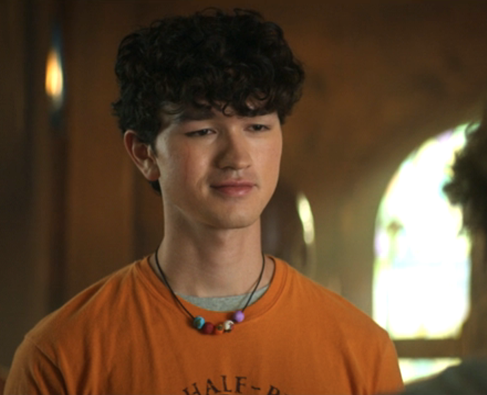
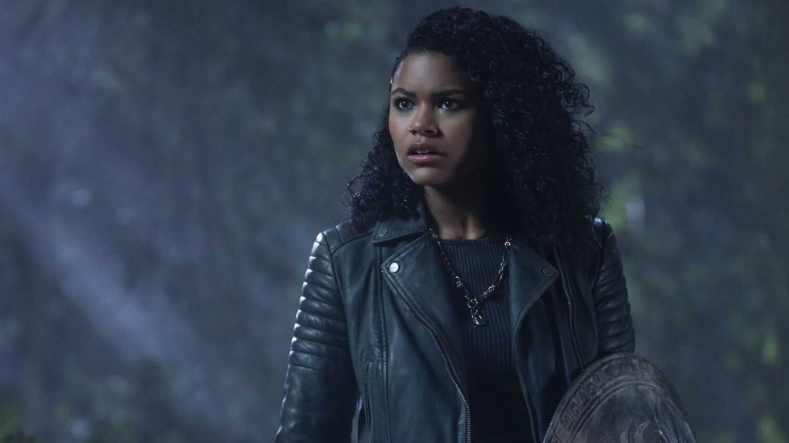
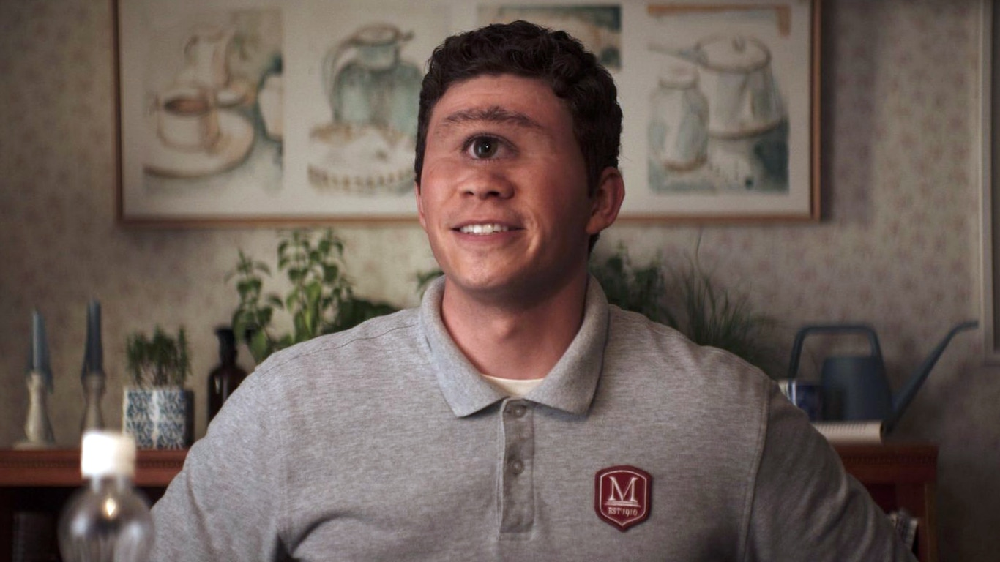
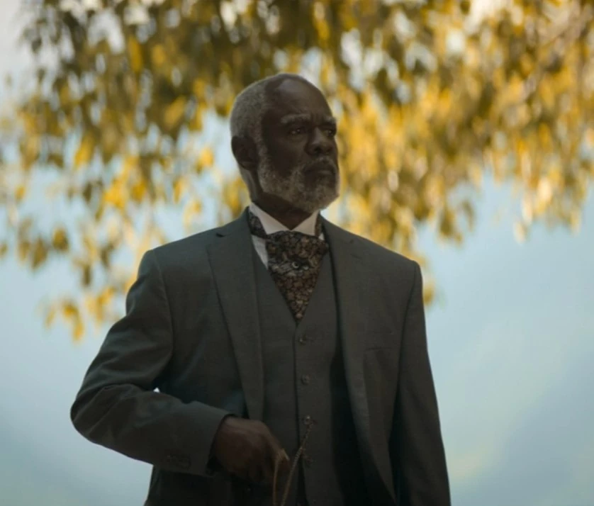
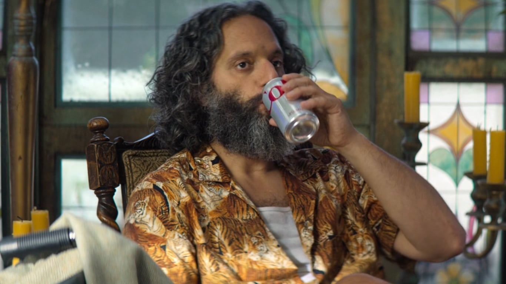
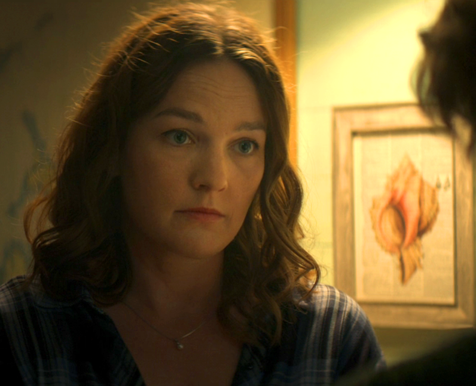
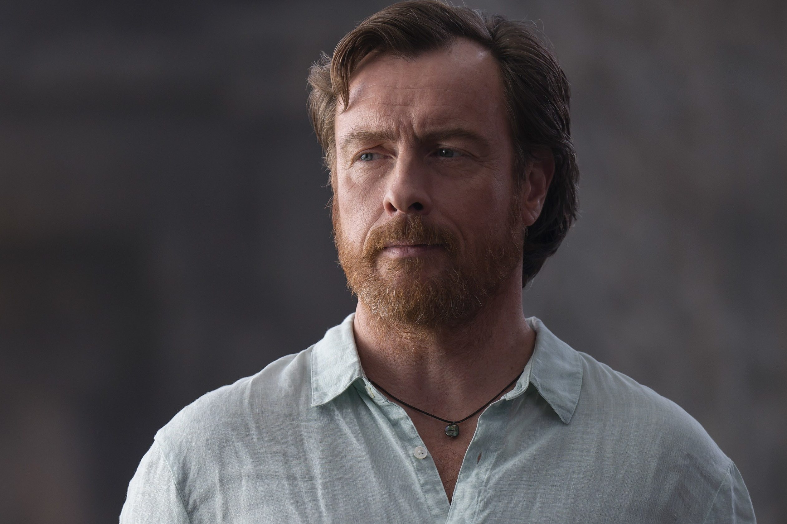
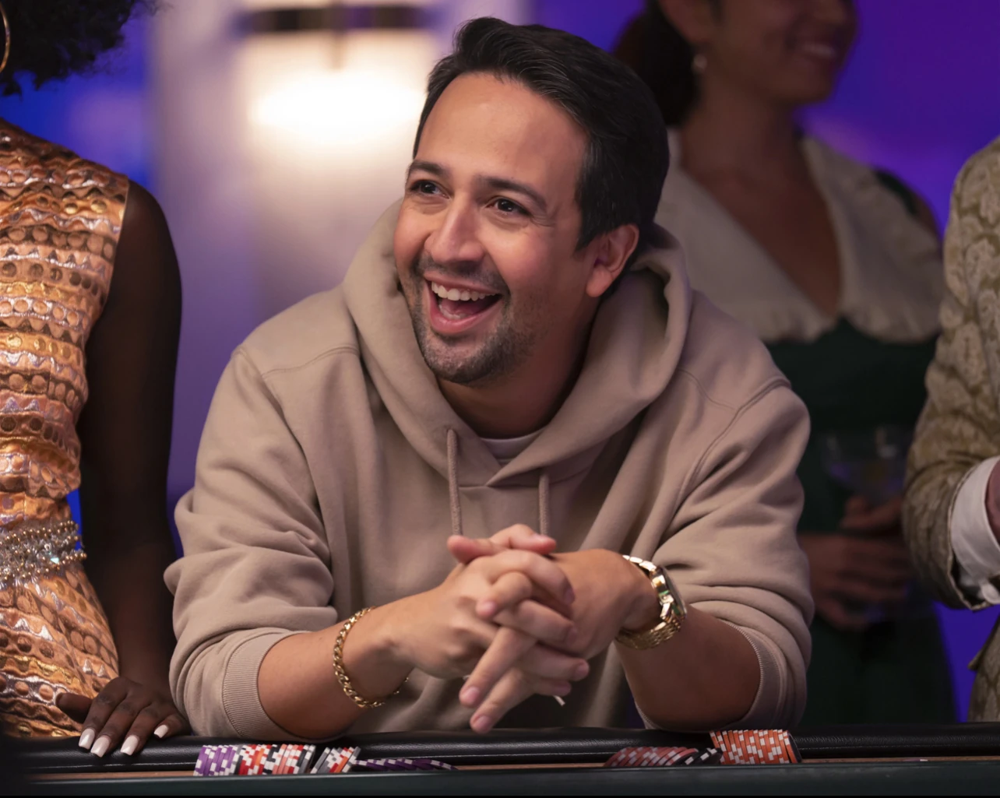

Conheça os maiores heróis do Acampamento Meio-Sangue
Das profecias antigas do Oráculo aos jovens heróis que enfrentam monstros no mundo moderno. Descubra quem são os semideuses que dominam os elementos, cumprem missões perigosas e salvam o Olimpo.
Principais Semideuses:

Percy Jackson
Semideus líder e filho de Poseidon, conhecido pela sua coragem, lealdade e sentido de humor sarcástico. Domina o controlo das águas e combate com a espada Contracorrente, liderando os heróis nas missões mais perigosas para salvar o Olimpo.

Annabeth Chase
Semideusa estrategista e filha de Atena, reconhecida pela sua inteligência brilhante, mestria em arquitetura e liderança em batalha. Utiliza a sua adaga de bronze celestial e o boné da invisibilidade para traçar os melhores planos e guiar os heróis nas missões mais perigosas.

Grover Underwood
Sátiro leal e Senhor do Selvagem, responsável por guiar e proteger os semideuses até ao Acampamento Meio-Sangue. Com a sua flauta de pã, magia da natureza e um inseparável elo de empatia, é o melhor amigo de Percy e um defensor incansável do mundo natural.

Clarisse La Rue
Semideusa destemida e filha de Ares, conhecida pela sua força bruta, temperamento forte e liderança na linha de frente. Como chefe do Chalé 5, enfrenta qualquer desafio sem hesitar, utilizando a sua lança elétrica em combate para proteger o acampamento e provar o seu valor em batalha.

Luke Castellan
Semideus hábil e filho de Hermes, reconhecido como um dos esgrimistas mais talentosos do acampamento. Movido por um forte sentimento de revolta contra os deuses e munido da espada Mordecostas, Luke é uma figura carismática e decisiva no rumo da grande profecia.

Thalia Grace
Destemida semideusa filha de Zeus e líder das Caçadoras de Ártemis (No final dos livros). Dominando o controle dos raios e equipada com a assustadora e poderosa Égide, Thalia é uma guerreira feroz com um forte sentido de justiça e uam personalidade ainda mais forte.

Tyson
Um ciclope de coração bondoso e meio-irmão de Percy Jackson. Apesar da sua força descomunal, Tyson é um ferreiro genial na forja de armas mágicas e um protetor incansável dos seus amigos.

Quíron (Sr. Brunner)
Centauro lendário e Diretor de Atividades do Acampamento Meio-Sangue. Treinador dos maiores heróis da história há milénios, atua como mentor sábio e protetor de Percy, guiando-o no descobrimento do mundo mitológico.

Dionísio (Sr. D)
Deus do Vinho e Diretor do Acampamento Meio-Sangue, punido por Zeus a supervisionar os semideuses. Apesar do seu temperamento resmungão e aparente desinteresse, garante a proteção e a ordem no santuário dos heróis.

Sally Jackson
Mãe mortal de Percy Jackson, com uma força de espírito e amor incondicional exemplares. Enfrentou anos de sacrifícios para proteger Percy dos monstros e prepará-lo para aceitar o seu verdadeiro destino como semideus.

Poseidon
Deus dos Mares e pai de Percy e de Tyson. Embora distante devido às leis severas do Olimpo, demonstra um afeto protetor pelo filho, ajudando com dicas e prêmios, e representa uma força elemental inabalável nos oceanos.

Hermes
Deus dos Mensageiros, Ladrões e Viajantes, e pai de Luke. Astuto e perspicaz, navega facilmente entre o mundo mortal e o divino, carregando o peso de uma relação complexa com a sua família.
| Semideus | Pai/Mãe Divino(a) | Arma Principal | Habilidade Especial |
|---|---|---|---|
| Percy Jackson | Poseidon | Contracorrente (Anaklusmos) | Hidrocinese e cura pela água |
| Annabeth Chase | Atena | Adaga de Bronze Celestial | Estratégia genial e combate |
| Nico di Angelo | Hades | Espada de Ferro Estígio | Viagem pelas sombras e necromancia |
| Luke Castellan | Hermes | Mordecostas | Esgrima magistral e furtividade |